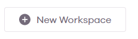
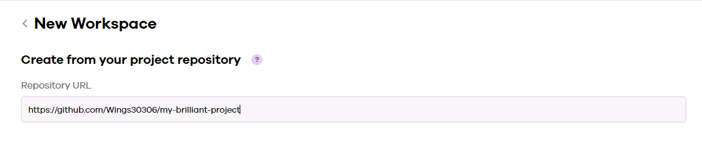
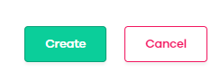
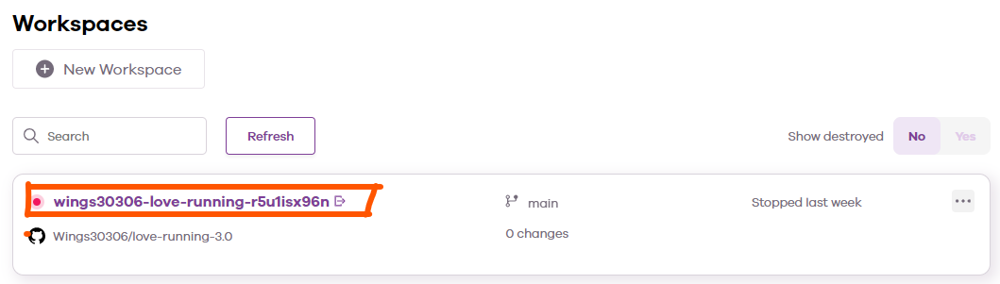

Creating a new workspace from an existing GitHub repo created in Gitpod.
Log into CodeAnywhere with your GitHub account.
On your Dashboard, click on the New Workspace button

Paste in the repo URL you copied from GitHub

Click Create

Wait for the workspace to open. This can take a few minutes.
Your workspace is now ready to use. When you want to return to this project, you can find it in your CodeAnywhere Dashboard. You should only create 1 workspace per project.
